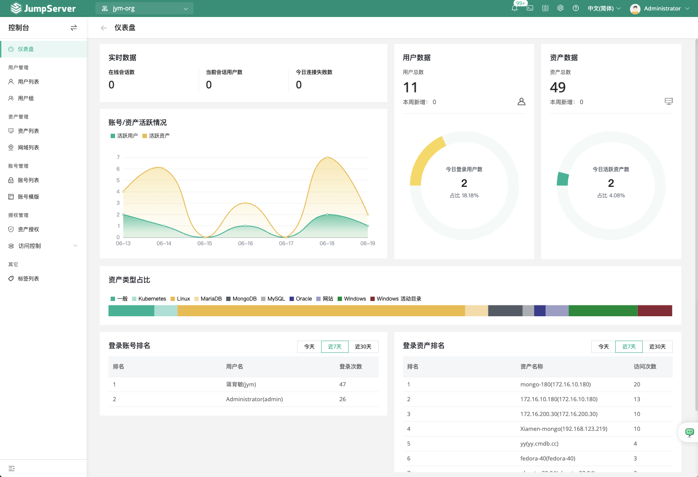
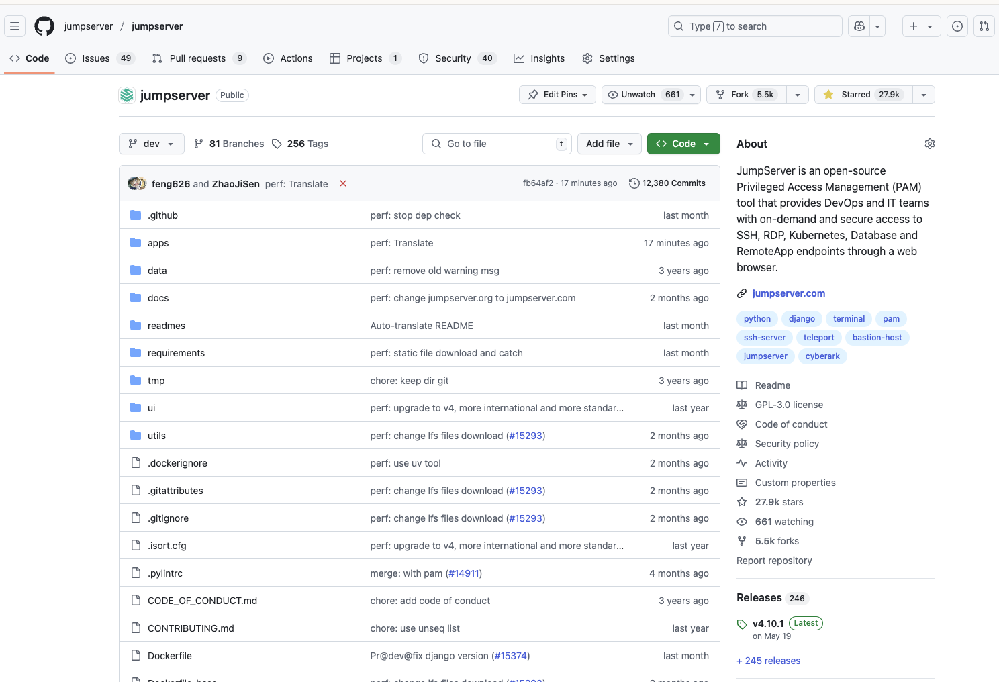
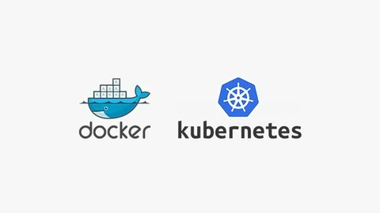
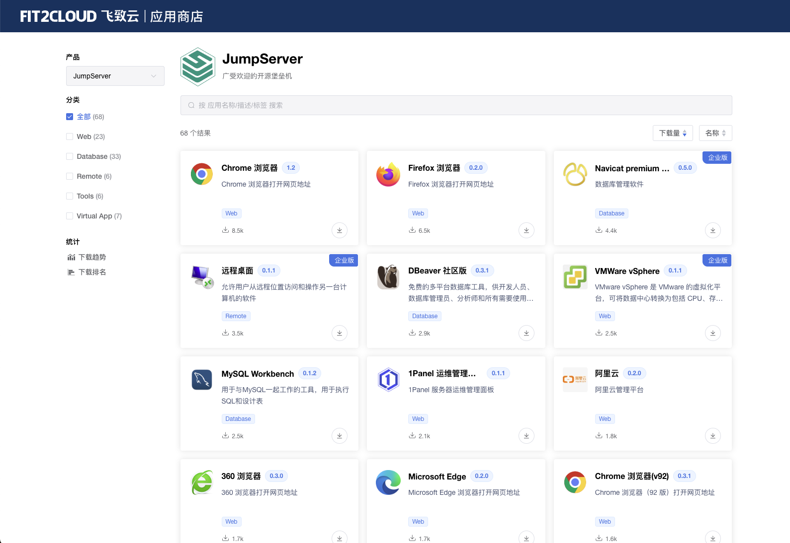

为什么选择 JumpServer？
基于深度对比分析，JumpServer 堡垒机以其现代化的技术架构、开源免费的理念、全面的功能以及出色的用户体验，为运维安全审计系统带来革命性的提升。

产品概览对比
全面了解堡垒机产品的核心定位、目标用户群体和基本特性
JumpServer
开源堡垒机领导者核心优势
- 开源开放
- 云原生架构
- 活跃社区
- 高性价比
- 现代化界面
- 丰富 API
传统堡垒机
传统企业级解决方案核心特色
- 资深厂商
- 迭代较慢
- 合规认证
- 行业经验
- 专业支持
- 硬件集成
详细功能对比
深入分析两款产品在各个功能维度上的表现差异
基础功能对比
| 功能特性 | JumpServer | 传统堡垒机 |
|---|---|---|
| SSH 协议支持支持 SSH 远程连接 | 优秀 | 良好 |
| RDP 协议支持Windows 远程桌面连接 | 优秀 | 优秀 |
| VNC 协议支持虚拟网络计算连接 | 优秀 | 良好 |
| Kubernetes 支持容器编排平台原生支持 | 优秀 | 不支持 |
| 数据库代理MySQL、Oracle 等数据库访问 | 优秀 | 有限 |
| Web 终端浏览器内置终端体验 | 优秀 | 良好 |
身份认证对比
| 功能特性 | JumpServer | 传统堡垒机 |
|---|---|---|
| 本地认证内置用户认证系统 | 优秀 | 优秀 |
| LDAP/AD 集成企业目录服务集成 | 优秀 | 优秀 |
| OAuth2/SAML现代化单点登录协议 | 优秀 | 有限 |
| 多因子认证MFA、FIDO2 等高级认证 | 优秀 | 良好 |
| Radius 认证网络访问服务器认证 | 优秀 | 优秀 |
审计能力对比
| 功能特性 | JumpServer | 传统堡垒机 |
|---|---|---|
| 会话录像完整会话过程记录 | 优秀 | 优秀 |
| 命令审计细粒度命令级别审计 | 优秀 | 良好 |
| 实时监控实时会话监控和干预 | 优秀 | 良好 |
| 审计回放历史会话回放分析 | 优秀 | 良好 |
| 合规报表满足行业合规要求的报表 | 良好 | 优秀 |
集成扩展对比
| 功能特性 | JumpServer | 传统堡垒机 |
|---|---|---|
| RESTful API完整的 API 接口支持 | 优秀 | 有限 |
| 插件机制灵活的功能扩展能力 | 优秀 | 有限 |
| 第三方集成CMDB、监控系统等集成 | 优秀 | 有限 |
| DevOps 集成CI/CD 流水线集成 | 优秀 | 不支持 |
| 消息通知钉钉、微信、邮件等通知 | 优秀 | 良好 |
为什么选择 JumpServer
深入解析 JumpServer 的独特价值主张和竞争优势

开源开放，自主可控
开源的代码库，用户可以深入了解实现细节，避免厂商锁定风险。
- GitHub 上开源
- 活跃的社区贡献
- 透明的开发过程
- 自主的知识产权

云原生架构，面向未来
原生支持 Docker、Kubernetes 等云原生技术，微服务架构设计，完美适配现代 IT 基础设施。
- 微服务架构
- 容器化部署
- Kubernetes 原生支持
- DevOps 友好
极致的用户体验
现代化的 Web 界面设计，直观的操作流程，大大降低学习成本，提升工作效率。
- 现代化 UI 设计
- 直观操作流程
- 响应式界面
- 优秀的交互体验

强大的功能与扩展性
不仅具备传统堡垒机功能，还在数据库代理、API 集成等方面进行创新，支持灵活的插件机制。
- 丰富的协议支持
- 强大的 API 能力
- 灵活的插件机制
- 无缝系统集成
高性价比，更低 TCO
社区版本免费使用，企业版提供灵活订阅模式，相比传统方案可显著降低总体拥有成本。
- 社区版本免费
- 灵活订阅模式
- 降低 TCO
- 高投资回报率
联系我们
想要进一步了解 JumpServer ? 欢迎通过如下方式联系我们